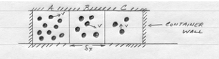

Diffusion¶
The sketch below represents three snapshots of a closed system with two ideal gasses.

Initially the closed system consists of two different ideal gasses at the same pressure separated by a partition (a). When the partition is removed, spontaneous mixing occurs (b). The sharp concentration profiles are rounded. After enough time has elapsed, equilibrium is reached and the concentration of gasses in the system is uniform (c).
This mixing process is called molecular diffusion.
When the diffusing materials are dilute relative to the host fluid (mole fraction << 1), then the host fluid acts as a conduit and does not need to move for the materials to move. When the materials are not dilute (as in the example above), significant bulk flow occurs of both the diffusing materials and the host fluid. In most civil and environmental engineering problems, the infinite (dilute) dilution condition is appropriate and one ignores the motion effect that the diffusing materials cause on the host fluid.
The sketch below depicts a physical system with a volatile liquid in contact with the atmosphere through a narrow bore tube. The liquid molecules evaporate to maintain a constant partial pressure equal to the vapor pressure of the liquid. Random motion of these gas molecules takes some of them out of the tube where they are mixed in with the atmosphere.

As these molecules leave the tube, more liquid must evaporate to maintain the constant vapor pressure – after a short time the rate of vaporization will become constant. The rate of escape of the molecules is inversely proportional the length of the tube, proportional to the area of the tube, and proportional to the partial pressure of the liquid.
One can incorporate these observations as:
The constant of proportionality is called the diffusion coefficient and the diffusive flux is expressed as:
This expression is called Fick’s first law of diffusion. It can be generalized into three-dimensions as
The diffusion coefficient is a property of the diffusing species, the host fluid, the temperature, and the pressure.
Kinetic-Molecular Model of Diffusion¶

Consider 3 small adjacent cells as depicted in the figure above. Each particle (molecule) has energy proportional to the square of its molecular velocity – while these velocities might be huge, the particles don’t move far before they hit a wall, another particle and their direction changes.
On average the velocities will have the same magnitude for any species (all tigers run the same speed, all bears run the same speed, but tigers and bears have different speeds). If we consider the energy in each cell we have an energy gradient from cell A to cell C. (We are using the particle number in each cell as a measure of the energy – 10 particles in cell A, 3 in cell C)
From mechanics principles one can argue that on average more particles will cross from A to B than from B to A in a short time period. Thus cell B will accumulate particles while cell A will tend to lose particles. When the number of particles in each cell is equal, then these will be no further net accumulation in either cell. If we divide each cell by its volume we see that the energy term has dimensions of a concentration multiplied by velocity squared (nearly the same dimension as the diffusion coefficient).
Now if we express the difference in energy in adjacent cells as a gradient
Thus one can conclude that the gradient of energy is proportional to the gradient of concentration. Flux is the flow of energy per unit time from high concentration to low concentration – using this mechanical model it can be expressed as
Observe that the flux incorporates the molecular velocity of the molecule relative to the host fluid (a function of molecule size, temperature, and shape). To obtain correct dimensionality we need to express the gradient as energy per unit weight of material (not unit volume) and relate velocity to host fluid properties – ultimately one can arrive at an explanation that matches Fick’s law.
Importance of Diffusion¶
In air the diffusion coefficients for a wide range of molecules of various molecular weights and functionalities range from \(0.05 ~\frac{ cm^2}{s}\) (large volatile organics) to \(0.6 ~\frac{ cm^2}{s}\) (hydrogen) – a variation of about one order of magnitude. In water the diffusion coefficients range from \(0.8 \times 10^{–5}~\frac{ cm^2}{s}\) to \(4.5 \times 10^{–5}~\frac{ cm^2}{s}\) for similar compounds – a variation of about ½ an order of magnitude.
The distance a molecule will travel is proportional to the square root of the product of time and diffusion coefficient – in air 1 meter/per day is reasonable; in water 1 cm/day is reasonable – thus as a process for bulk transport, diffusion is meaningless except at interfaces where it may be the only process. It can achieve huge transport rates at interfaces because of large gradients that occur in these regions.
However at low host fluid velocities, diffusion can matter and more importantly the structure of the mathematical model is similar to the dispersion process.